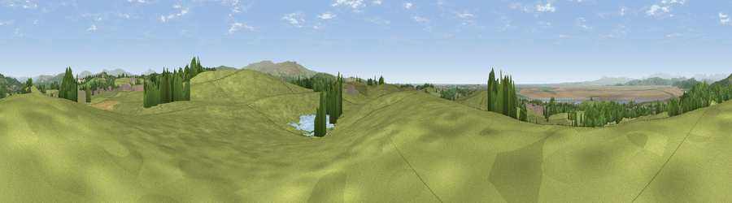

Viewpoint near Bolton-le-Sands
#9773 in England · top 37% of its area beats it · near Bolton-le-SandsThe view, rendered

A 360° render of this exact spot computed from the terrain model, tree cover and land cover — summer colours, afternoon light, calibrated against photographs of famous viewpoints. Real trees, hedges and buildings will differ in detail.
The panorama
Grey silhouette: terrain skyline in each direction (720 bearings, Earth curvature and refraction included). Dashed green: skyline with trees (+15 m) and buildings (+8 m) as obstacles. Blue strip: how far the ground is visible on each bearing.
Where the view opens
Wedge length = distance to the farthest visible ground on that bearing (vegetation-aware). Rings at 10, 25 and 50 km.
What fills the view
76% grassland · 11% water · 10% woodland · 3% built-up ·
Angular shares of the visible panorama (visual magnitude), not map area. Landscape diversity 0.36 (0–1 Shannon).
Key numbers
More beautiful places nearby
The staircase of upgrades: each row has a higher view potential than everything closer. Driving times are estimates from straight-line distance, calibrated against real road routing — check an actual route before setting out.
| Place | Direction | Drive | Score |
|---|---|---|---|
| Inglebrick | WSW · 1 km | ~3 min | 65.3 |
| Viewpoint near Nether Kellet | NE · 3 km | ~6 min | 69.7 |
| Viewpoint near Over Kellet | NE · 3 km | ~8 min | 73.0 |
| Viewpoint near Over Kellet | NE · 3 km | ~8 min | 77.4 |
| Warton Crag | N · 6 km | ~12 min | 83.2 |
| Viewpoint near Grange-over-Sands | NW · 15 km | ~27 min | 83.4 |
| Viewpoint near Cartmel | NW · 18 km | ~31 min | 87.0 |
| Viewpoint near Cartmel | NW · 18 km | ~32 min | 87.2 |
54.09739, -2.77847 · source: screening · position refined by local search. Computed location — check access rights before visiting.